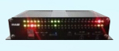

RosimWVD-230x
Smaller, smarter
Ultra-small size wireless vehicle detector
No cables, no cutting, no traffic close
Less time, less cost, less maintenance

-
WVD-230xWireless Vehicle Detection sensor
is designed for pursuit of high efficiency and
low cost ITS traffic application systems.
Based on technology of magnetic detection
and uPowerTM wireless sensor network, WVD
-230x sensors can be easily installed on road
in few minutes without any wiring to acquire
dynamic traffic flow information with no
maintenance for many years.
-
APPLICATIONS
ITS Traffic flow monitor
Speed enforcement
Red light enforcement
Travel time guidance
Traffic signal optimization
Freeway incident detection
Entrance vehicle counting
-
KEY FEATURES
433MHz 50m transmit range
27Ah battery 7 years lifespan
66/H79mm ultra-small size
-40~85'Cwork temperature
Wireless OTA upgrade
97%+ accuracy
Embedded installation
- FUNCTIONS
Traffic flow detection
Vehicle presence detection
Driving direction detection
Vehicle speed detection
Vehicle counting
Temperature detection
All weather work condition
-
INSTALLATION
- 1.Drill a small hole of 12/D10cm
- 2.Fill it with cement to 1/2
- 3.Embedded WVD to finish installation

-
AVAILABLE MODELS
WVD-230x is available for
F/E/V/D models:
- F: Flow detection
- E: Existence detection
- V: Speed detection
- D: Direction detection
Also a Start Kit is available
for WVD-230x
-
RELATED PRODUCT
WVD-230x is designed to work
with WAP wireless access point,
which collects data from WVDs
and relays to user system.
AP-348G/P for 48 channels
ensorManagerTM software

-
SUPPORT SERVER
Online shop :
http://rosimits.en.alibaba.com
Tel: +86-760-85313186
Fax: +86-769-85313186
Mail:Rosimits@163.com
www.rosimits.com
 English
English 中文
中文